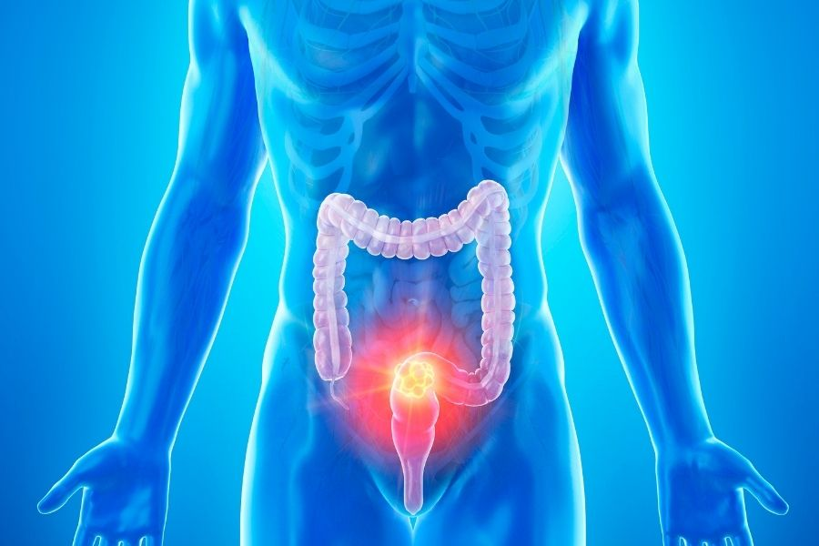
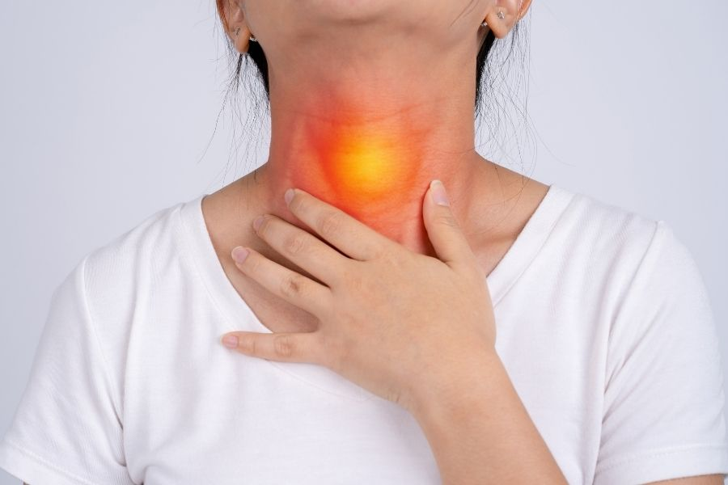
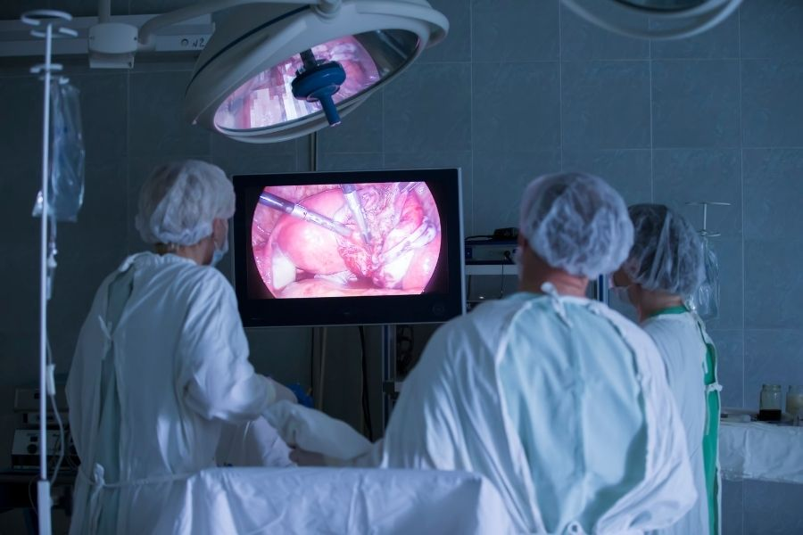

Hizmet Alanlarımız
Cerrahi onkoloji alanında uzmanlaştığımız kanser türleri
Meme Kanseri
Erken teşhis ve modern tedavi yöntemleriyle meme kanseri tedavisinde uzman hizmet.
Detaylar




Laparoskopik Cerrahi
Minimal invaziv cerrahi tekniklerle hızlı iyileşme ve düşük komplikasyon oranı.
Detaylar